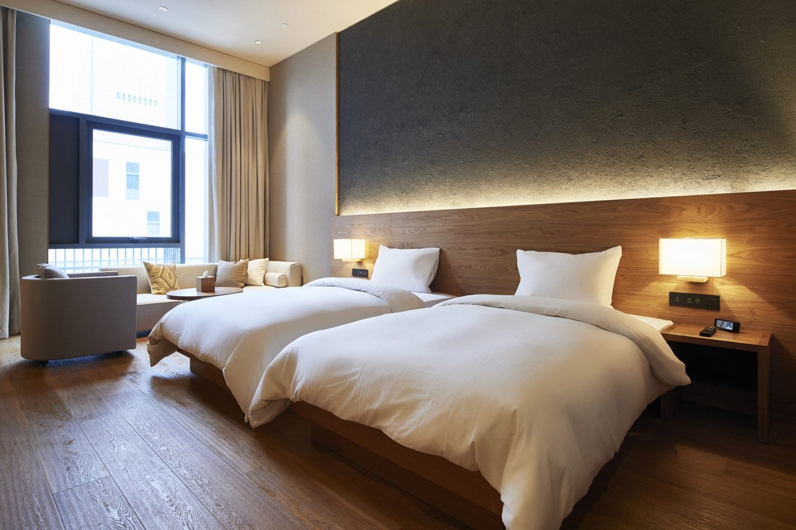

ead supply↗
ead supply↗01 / COMMERCE EXPERIENCE
↗EAD Supply
A better setup starts here. Katalog elektronik dengan pencarian, filter, keranjang, dan checkout demo.
UI DESIGNJAVASCRIPTPHP + SQLITE
DESIGN × DEVELOPMENT / PROJECT FIKRI
Dua kebutuhan sehari-hari. Dua karakter visual.
Satu eksplorasi tentang pengalaman digital
yang lebih sederhana, lebih terasa.
ead supply↗A better setup starts here. Katalog elektronik dengan pencarian, filter, keranjang, dan checkout demo.

ead stay.↗Make room for a little slow. Pengalaman booking dengan harga transparan dan reservasi demo yang tersimpan.
BEHIND THE REMAKE
Sistem visual berbeda untuk commerce dan hospitality, dengan hirarki dan detail yang konsisten.
Harga diverifikasi di server. Pesanan dan reservasi disimpan di SQLite, bukan sekadar notifikasi sukses.
Layout responsif, navigasi keyboard, validasi formulir, dan status kosong yang jelas.